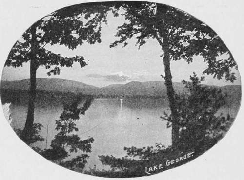

The Mascalonge In Wisconsin Waters. Continued
Description
This section is from the book "American Game Fishes", by W. A. Perry. Also available from Amazon: American Game Fishes: Their Habits, Habitat, and Peculiarities; How, When, and Where to Angle for Them.
The Mascalonge In Wisconsin Waters. Continued
When lying in this way, basking in the sun, they rarely take bait unless it be unusually attractive, but when lurking in the weeds or rushes, waiting for some living victim, they will take artificial bait voraciously
They do not seem to be so voracious however as their smaller cousin, the Pickerel, and there are times when for days together, no amount of coaxing will induce them to take bait of any kind.
When they do take it, then look out, for they strike with such tremendous force as to astonish the novice, and if he happens to have the line too loose or in any way snarled, away goes his fish, and all he has to show for it is a good scare. They are very powerful and quick, and it is no child's play to handle a large one. Even the experienced angler will have his hands full, and will be called upon to exert all his skill to save the monster, and even after he has apparently given up, lies on his side or back, is hauled alongside fcr the gaff to finish the work, he frequently gives a tremendous surge and away he goes for a final run that will test the tackle to its utmost.
This noble fish is well entitled to the name of the "Tarpon of the North," and will in time be so called. He is a grand fighter, and never gives up until he is actually dead.
Talk about Black Bass, or any other kind of fresh-water fish! There are none that can compare with this leviathan of our inland waters, for pluck and gaminess.
West of the Mississippi those fish do not seem to be so common, though I have been told that in Elbow Lake, in the Lake Park region of Minnesota, they are numerous and grow to a great size. How true this is I cannot say, but that there are large fish in that lake, similar to the Mascalonge, I have no doubt.
These grand fish are found in Northern Wisconsin in the following waters: Pelican Lake, Tomahawk and adjoining lakes, Arbor Vitse, St. Germain lakes, Trout Lake, the Eagle Waters, a chain of lakes through which Eagle River passes, Three Lakes and others connected therewith; Buckatarbon Lake Lac Vieux Desert,* Big and Little Twin Lakes, Long Lake, Sand Lake, and various others, many of which have not yet been explored or named. In nearly all these lakes the three specimens are found.
To the angler this region is a paradise. Abounding as it does with beautiful scenery, ever-changing and always wild, it will for years to come be a favorite resort for lovers of nature.
During the year of 1889 some 400 Mascalonge were taken from Lac Vieux Desert, of sizes ranging from three pounds to forty-two and one-half pounds, and there seems to be no diminution in their numbers. This lake is about five miles long and from one to three miles wide. In early spring the best place to seek these fish is very close to the shore, so close in fact that one can use but little line and where the guide can push along with the paddle, by resting it on the bottom.
My experience in trolling teaches me that a long line out is unnecessary. From fifteen to twenty feet is enough, in fact. I have caught large ones within six feet of the boat. A good way is to go out where the weeds or lily-pads are thick, and cast with a spoon or large shiner. Lac Vieux Desert is quite a shallow lake, being only twelve feet deep in the deepest place, and is very weedy. It is the head of the Wisconsin River. In some of the other lakes where the water is clear and deep, these fish seem to be just as numerous as in Vieux Desert, so it seems they are equally at home in widely different waters.
These fish ought to be protected, and why some of our enterprising Fish Commissions have not taken steps to propagate them, artificially, is not known.
My experience and observation lead me to believe that it would be an easy matter to propagate them, and it is to be hoped that it may be tried at an early day.
* Pronounced "View Desare."
In June, 1888, I was at Big Twin lake, where I had caught several large Mascalcnge, and being informed that Lac Vieux Desert was a good lake for these fish, I took Fred French of Three Lakes and went over to investigate.
We got there too late for much fishing that day, so we waited till morning. We started out before breakfast and trolled along the west shore, just outside of the rushes, for about two miles, catching an occasional Bass, Pike or Pickerel, and when we got near what is locally known as '"Lunge Point," all at once there was a fearful rush and commotion, and we knew we had a big one.
Down he went, taking line rapidly, until he must have found the bottom in forty feet of water. Then up he came clear out of water, his glistening sides sparkling in the rays of the rising sun, shaking his ponderous jaws in a mighty effort to get rid of the cruel barb. He was kept well in hand and not allowed a foot of slack line. Three times he vaulted clear out of the water, and fought like a tiger while in his ele-ment. The struggle was a long and determined one, but he finally gave up, when Fred gaffed him and lifted him into the boat. There he lay in all his beauty, his magnificent sides rising and falling as he sought to breathe in the lighter element. He had an ugly look in his eyes, that warned us to keep clear of his rugged fangs. After admiring him some minutes I told Fred this was glory enough for an earl)' morning, and we bent our oars for camp. At the house our prize tipped the beam at thirty-three pounds, good, honest weight. After breakfast we started out again and before ten o'clock returned with six Mascalonge, weighing seventy-two pounds, one Pickerel of twelve pounds, one Large-mouth Bass, six pounds, one Wall-eyed Pike of nine and a quarter pounds, besides various other smaller fish, making a total weight of one hundred and twenty pounds. I was tired out and said to the guide that I had had sport enough for one day.
The rig used for this work was an eight-ounce Goodridge combination rod, a "G" linen line, to a common multiplying reel, and a number eight Skinner spoon. The line was a new one, but it was so frayed when we quit work that it was taken off and is still in my tackle box, kept as a memento of one of the grandest pieces of sport I ever enjoyed.
On the fifth of August, 1887, Mr. L. Thomas came to me and said, "Don't you want to go out and catch a 'Lunge," and I said that was just what I did want, and we were soon on the water with his son Louis as the third member of the party. It was about four p. m. when we threw out our lines. Mr. Thomas had a hand-line, a number 4 Hill gold bait, a double gang of hooks number 8, and a large chub minnow hooked to the upper gang. I had my old rod, a small line, a double Skinner spoon, one number 7, the other number 8, with a double gang of number 8 hooks and a large chub on upper gang.
We had proceeded but a short distance when Mr. Thomas had a strike, and after the usual course of maneuvering we took his victim in, started on again and soon it came my turn. I had a lusty strike, and after playing after my fish some time and the weeds being thick we went ashore and slid him out on the stones very nicely. Mr. Thomas now changed with his son and took the oars. In a short time Louis had a strike, and as his fish proved to be a large one we went ashore again, at the same place, and landed this specimen without trouble. This last one weighed thirty-eight pounds, and his stuffed skin is now on exhibition in the city ticket office of the M. L. S. & W. Ry. at Chicago. We started again and soon I got another large one, but he got into the weeds, in spite of all I could do, and I lost him.
We then started for home, and just before we got to the rushes, Mr. Thomas, who had the line again, had a heavy strike but he missed. He said to his son, "Turn right around; we'll go over that ground again and get that fellow yet." After passing over the spot twice and getting no strike I proposed giving him up, but Mr. Thomas who had had more experience than I, said, "No; we'll try him once more," and as we passed over the spot a third time the old Esox took my spoon with a terrific splash.
"There you have him," said Thomas. I at once realized that, and I had him sure enough. After a long and hotly contested fight we took him in and went ashore. The four fish weighed, respectively, thirty-eight, thirty and one-half, twenty-nine and one-half, and thirty-three pounds, and a prettier sight I never saw-those noble fellows lying side by side. To say we were proud would illy express our feelings.
By A. A. Mosher.

Continue to: